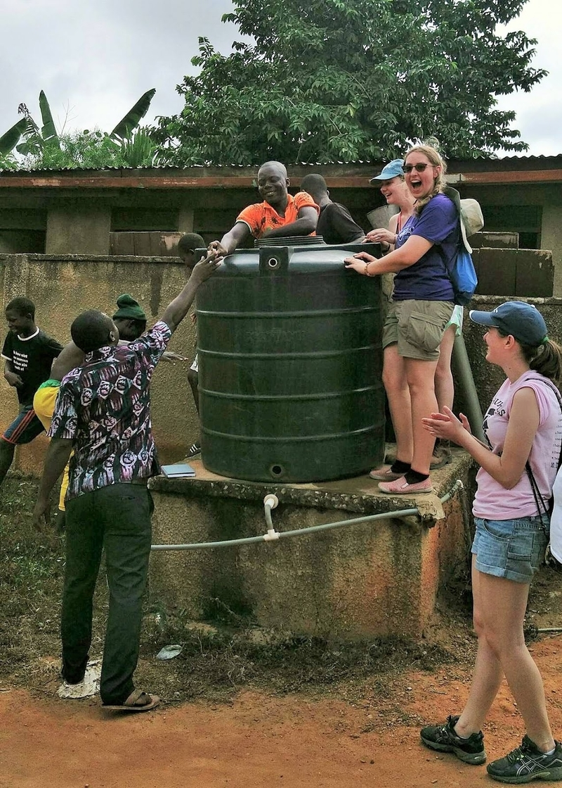
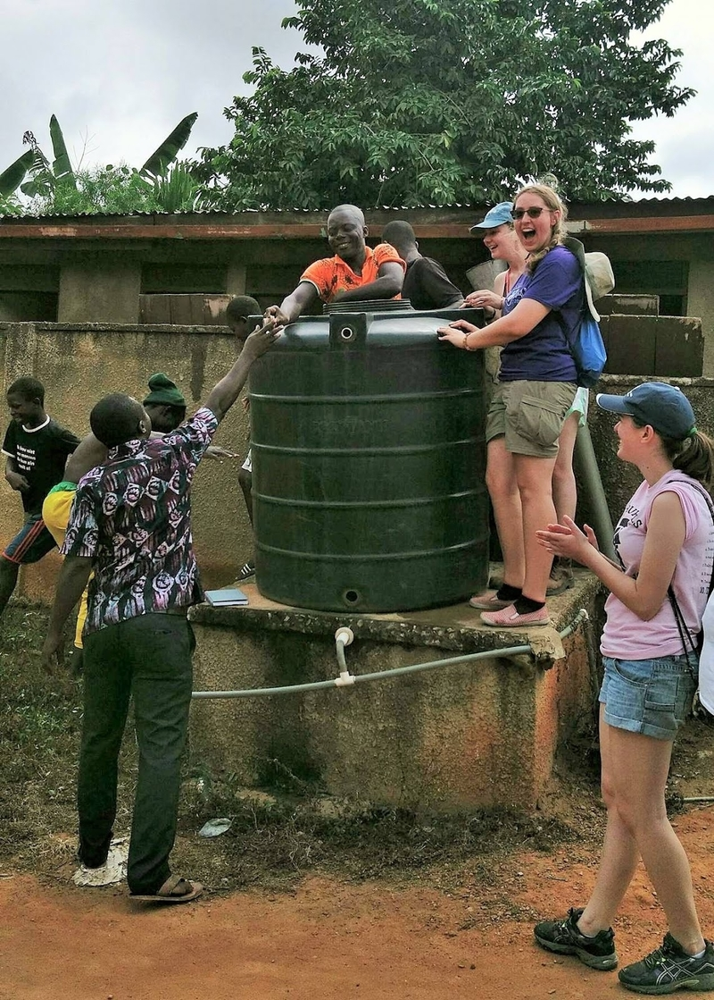

Water Project
Amanfrom is a rural village of 2000 subsistence farmers in the eastern region of Ghana. When we began working with them in 2015, they lacked clean year-round water sources. Women and children had to walk long distances to collect water.
The water distribution system we are currently building in Amanfrom will create a gravity-fed water distribution system that will bring water to 6-8 standpipes in locations chosen by the Amanfrom Water Committee.
In 2014, the village of Amanfrom contacted us asking for a water distribution system similar to our past project in Obodan. Amanfrom relied exclusively on seasonal surface water and shallow groundwater from streams, springs and hand-dug wells, all of which failed to meet WHO standards. To address this issue, we drilled and constructed two new wells within the community during our first implementation trip in August 2016. These two new reliable sources of water have greatly increased the water capacity of the community. Our chapter seeks to continue implementation and use these two wells in a gravity-fed water distribution system to bring water to six additional points in the village. Once the water system is firmly in place, the local government will begin collecting small fees for water, which will enable them to save funds for maintenance, repairs and future development projects.
Our team is also preparing an in-depth education effort in order to teach water, sanitation, and hygiene lessons to the villagers in Amanfrom. We will also be conducting water quality tests to ensure that the water meets WHO standards, and we will also monitor the community’s capacity to independently operate and manage the new water distribution system.

 
